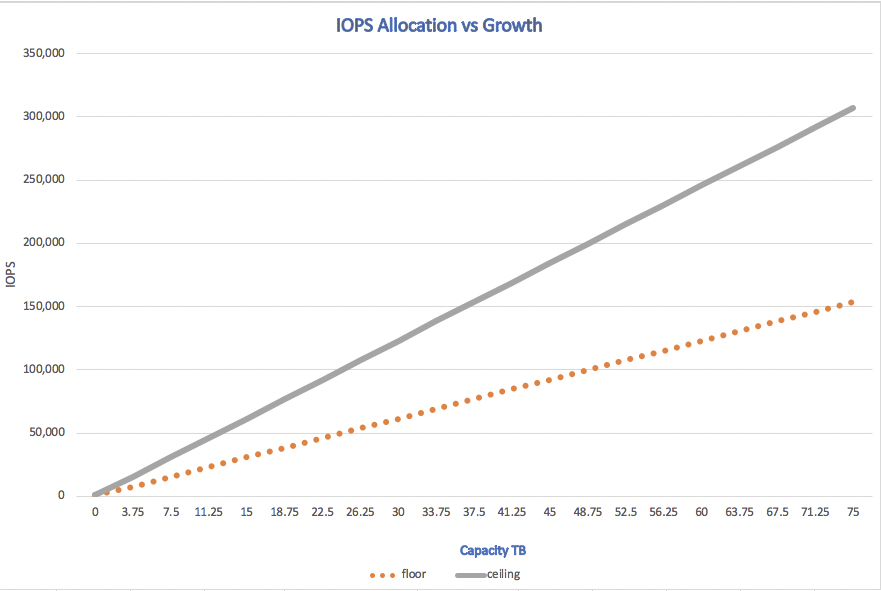

문서 변경 요청
문서 변경 요청 이 페이지 편집
이 페이지 편집 기여하는 방법 자세히 알아보기
기여하는 방법 자세히 알아보기워크로드 테스트
기여자
AFF A300 절차
AFF A300 HA 쌍에서는 최대 Epic 인스턴스를 편안하게 실행할 수 있습니다. 매우 큰 Epic 인스턴스가 두 개 이상 있는 경우 NetApp SPM 툴의 결과를 기반으로 AFF A700을 사용해야 할 수 있습니다.
데이터 생성
LUN 내의 데이터는 Epic의 Dgen.pl 스크립트를 사용하여 생성되었습니다. 이 스크립트는 Epic 데이터베이스 내에 있는 데이터와 비슷한 데이터를 생성하도록 설계되었습니다.
다음 Dgen 명령은 RHEL VM, epic-rhel1 및 epic-rhel2 모두에서 실행되었습니다.
./dgen.pl --directory "/epic" --jobs 2 --quiet --pctfull 20
'-pctfull’은 선택 사항이며 데이터를 채울 LUN의 비율을 정의합니다. 기본값은 95%입니다. 이 크기는 성능에 영향을 주지 않지만 데이터를 LUN에 쓰는 시간에 영향을 줍니다.
dgen 프로세스가 완료되면 각 서버에 대해 Genio 테스트를 실행할 수 있습니다.
Genio를 실행합니다
서버 2개를 테스트했습니다. 대규모 Epic 환경을 나타내는 75,000~110,000 IOPS의 램프를 실행했습니다. 두 테스트는 동시에 실행되었습니다.
server epic-rhel1에서 다음 Genio 명령을 실행합니다.
./RampRun.pl –miniops 75000 --maxiops 110000 --background --disable-warmup --runtime 30 --wijfile /epic/epicjrn/GENIO.WIJ --numruns 10 --system epic-rhel1 --comment Ramp 75-110k
AFF A300에 대한 Genio 결과
다음 표에는 AFF A300의 Genio 결과가 나와 있습니다
| 읽기 IOP | 쓰기 IOPS | 총 IOP | 가장 긴 쓰기 주기(초) | 유효 쓰기 지연 시간(ms) | Randread 평균(ms) |
|---|---|---|---|---|---|
142505 |
46442 |
188929)를 참조하십시오 |
44.68 |
0.115 |
0.66 |
AFF A700 절차
일반적으로 글로벌 레퍼런스가 1,000만 이상인 대규모 Epic 환경의 경우 고객은 AFF A700을 선택할 수 있습니다.
데이터 생성
LUN 내부의 데이터는 Epic의 Dgen.pl 스크립트를 사용하여 생성되었습니다. 이 스크립트는 Epic 데이터베이스 내에 있는 데이터와 비슷한 데이터를 생성하도록 설계되었습니다.
세 개의 RHEL VM 모두에 대해 다음 Dgen 명령을 실행합니다.
./dgen.pl --directory "/epic" --jobs 2 --quiet --pctfull 20
'-pctfull’은 선택 사항이며 데이터를 채울 LUN의 비율을 정의합니다. 기본값은 95%입니다. 이 크기는 성능에 영향을 주지 않지만 데이터를 LUN에 쓰는 시간에 영향을 줍니다.
dgen 프로세스가 완료되면 각 서버에 대해 Genio 테스트를 실행할 준비가 된 것입니다.
Genio를 실행합니다
서버 3개를 테스트했습니다. 두 대의 서버에서 75,000~100,000 IOP의 램프를 실행했으며 이는 매우 큰 Epic 환경을 나타냅니다. 세 번째 서버는 75,000 IOPS에서 170,000 IOPS로 확장할 수 있는 대규모 서버로 설정되었습니다. 세 가지 테스트가 모두 동시에 실행되었습니다.
server epic-rhel1에서 다음 Genio 명령을 실행합니다.
./RampRun.pl –miniops 75000 --maxiops 100000 --background --disable-warmup --runtime 30 --wijfile /epic/epicjrn/GENIO.WIJ --numruns 10 --system epic-rhel1 --comment Ramp 75-100k
AFF A700의 Genio 결과
다음 표에는 Genio 결과에 대한 AFF A700 테스트가 나와 있습니다.
| 읽기 IOP | 쓰기 IOPS | 총 IOP | 가장 긴 쓰기 주기(초) | 유효 쓰기 지연 시간(ms) | Randread 평균(ms) |
|---|---|---|---|---|---|
241,180 |
78,654 |
319,837 |
43.24 |
0.09 |
1.05 |
AQOS의 성능 SLA
NetApp은 AQOS 정책을 사용하여 워크로드에 대한 바닥 및 최대 성능 값을 설정할 수 있습니다. 바닥 설정은 최소 성능을 보장합니다. Epic과 같은 애플리케이션의 볼륨 그룹에 IOPS/TB를 적용할 수 있습니다. QoS 정책에 할당된 Epic 워크로드는 동일한 클러스터의 다른 워크로드로부터 보호됩니다. 최소 요구사항은 보장된 반면 워크로드는 컨트롤러에서 사용 가능한 리소스를 사용하고 최대 성능을 유지할 수 있습니다.
이 테스트에서 서버 1과 서버 2는 AQOS로 보호되었고, 세 번째 서버는 클러스터 내에서 성능 저하를 야기하는 불큰 작업 부하로 작용했습니다. AQOS에서는 서버 1과 2가 지정된 SLA에서 수행할 수 있는 반면, 불룩한 워크로드는 더 긴 쓰기 주기로 인해 성능 저하의 징후를 보였습니다.
적응형 서비스 품질 기본 설정
ONTAP는 값, 성능 및 극도의 세 가지 기본 AQOS 정책으로 구성됩니다. 각 정책의 값은 QoS 명령으로 확인할 수 있다. 명령 끝에 있는 '-instant’를 사용하여 AQOS 설정을 모두 봅니다.
::> qos adaptive-policy-group show Name Vserver Wklds Expected IOPS Peak IOPS extreme fp-g9a 0 6144IOPS/TB 12288IOPS/TB performance fp-g9a 0 2048IOPS/TB 4096IOPS/TB value fp-g9a 0 128IOPS/TB 512IOPS/TB
AQOS 정책을 생성하는 구문은 다음과 같습니다.
::> qos adaptive-policy-group modify -policy-group aqos- epic-prod1 -expected-iops 5000 -peak-iops 10000 -absolute-min-iops 4000 -peak-iops-allocation used-space
AQOS 정책에는 몇 가지 중요한 설정이 있습니다.
-
* 예상 IOPS. * 이 적응형 설정은 정책에 대한 최소 IOPS/TB 값입니다. 워크로드는 이러한 수준의 IOPS/TB를 보장합니다. 이 테스트에서 가장 중요한 설정입니다. 이 테스트 예에서는 성능 AQOS 정책이 2048IOPS/TB로 설정되었습니다.
-
* 최대 IOPS. * 이 적응형 설정은 정책에 대한 최대 IOPS/TB 값입니다. 이 테스트 예에서는 성능 AQOS 정책이 4096IOPS/TB로 설정되었습니다.
-
* 최대 IOPS 할당. * 옵션은 공간이 할당되거나 사용된 공간입니다. LUN에서 데이터베이스가 확장됨에 따라 이 값이 달라지므로 이 매개 변수를 사용된 공간으로 설정하십시오.
-
* 절대 최소 IOPS. * 이 설정은 정적이며 적응이 아닙니다. 이 매개 변수는 크기에 관계없이 최소 IOPS를 설정합니다. 이 값은 크기가 1TB 미만인 경우에만 사용되며 이 테스트에 아무런 영향을 주지 않습니다.
일반적으로 운영 환경에서 Epic 워크로드는 약 1000 IOPS/TB의 스토리지 및 용량으로 실행하고, IOPS는 선형적으로 증가합니다. 기본 AQOS 성능 프로필이 Epic 워크로드에 적합한 프로필보다 많습니다.
이 테스트의 경우, 5TB의 더 작은 운영 크기 데이터베이스가 반영되지 않았습니다. 목표는 각 테스트를 75,000 IOPS로 실행하는 것이었습니다. EpicProd AQOS 정책에 대한 설정이 아래에 나와 있습니다.
-
예상 IOPS/TB = 총 IOPS/사용된 공간
-
15,000 IOPS/TB = 75,000 IOPS/5TB
다음 표에는 EpicProd AQOS 정책에 사용된 설정이 나와 있습니다.
| 설정 | 값 |
|---|---|
볼륨 크기 |
5TB |
필수 IOPS |
75,000개 |
PEAK-IOPS 할당 |
사용된 공간 |
절대 최소 IOPS |
7,500입니다 |
예상 IOPS/TB |
15,000 |
최대 IOPS/TB |
30,000입니다 |
다음 그림에서는 사용된 공간이 시간이 지나면서 성장함에 따라 바닥 IOPS 및 천장 IOPS가 어떻게 계산되는지 보여 줍니다.

프로덕션 크기의 데이터베이스의 경우 마지막 예제에 사용된 것과 같은 사용자 지정 AQOS 프로필을 생성하거나 기본 성능 AQOS 정책을 사용할 수 있습니다. 성능 AQOS 정책 설정은 아래 표에 나와 있습니다.
| 설정 | 값 |
|---|---|
볼륨 크기 |
75TB |
필수 IOPS |
75,000개 |
PEAK-IOPS 할당 |
사용된 공간 |
절대 최소 IOPS |
500입니다 |
예상 IOPS/TB |
1,000개 |
최대 IOPS/TB |
2,000개 |
다음 그림에서는 기본 성능 AQOS 정책에 대해 사용된 공간이 시간이 지남에 따라 증가하므로 바닥 및 천장 IOPS가 계산되는 방식을 보여 줍니다.

매개 변수
-
다음 매개 변수는 어댑티브 정책 그룹의 이름을 지정합니다.
-policy-group <text> - Name
적응형 정책 그룹 이름은 고유해야 하며 밑줄 "_" 및 하이픈 "-"을 포함하여 127자의 영숫자로 제한됩니다. 적응형 정책 그룹 이름은 영숫자로 시작해야 합니다. QoS adaptive-policy-group rename 명령을 사용하여 adaptive policy group 이름을 변경합니다.
-
다음 매개 변수는 이 적응형 정책 그룹이 속한 데이터 SVM(명령줄에서 SVM이라고 함)을 지정합니다.
-vserver <vserver name> - Vserver
이 적응형 정책 그룹은 지정된 SVM에 포함된 스토리지 오브젝트에만 적용할 수 있습니다. 시스템에 SVM이 하나만 있는 경우 명령은 기본적으로 해당 SVM을 사용합니다.
-
다음 매개 변수는 할당된 스토리지 객체 크기에 따라 할당된 최소 예상 IOPS/TB 또는 IOPS/GB를 지정합니다.
-expected-iops {<integer>[IOPS[/{GB|TB}]] (default: TB)} - Expected IOPS -
다음 매개 변수는 할당된 스토리지 객체 크기 또는 사용된 스토리지 객체 크기에 따라 할당되는 최대 IOPS/TB 또는 IOPS/GB를 지정합니다.
-peak-iops {<integer>[IOPS[/{GB|TB}]] (default: TB)} - Peak IOPS -
다음 매개 변수는 예상 IOPS가 이 값보다 작을 때 재정의로 사용되는 절대 최소 IOPS를 지정합니다.
[-absolute-min-iops <qos_tput>] - Absolute Minimum IOPS
기본값은 다음과 같이 계산됩니다.
qos adaptive-policy-group modify -policy-group aqos- epic-prod1 -expected-iops 5000 -peak-iops 10000 -absolute-min-iops 4000 -peak-iops-allocation used-space
qos adaptive-policy-group modify -policy-group aqos- epic-prod2 -expected-iops 6000 -peak-iops 20000 -absolute-min-iops 5000 -peak-iops-allocation used-space
qos adaptive-policy-group modify -policy-group aqos- epic-bully -expected-iops 3000 -peak-iops 2000 -absolute-min-iops 2000 -peak-iops-allocation used-space
데이터 생성
LUN 내의 데이터는 Epic Dgen.pl 스크립트를 사용하여 생성되었습니다. 이 스크립트는 Epic 데이터베이스 내에 있는 데이터와 비슷한 데이터를 생성하도록 설계되었습니다.
다음 Dgen 명령은 세 개의 RHEL VM 모두에서 실행되었습니다.
./dgen.pl --directory "/epic" --jobs 2 --quiet --pctfull 20
Genio를 실행합니다
서버 3개를 테스트했습니다. 두 개는 대규모 Epic 환경을 나타내는 75,000 IOPS의 일정한 성능을 보였습니다. 세 번째 서버는 7만5천 IOPS에서 15만 IOPS까지 확장할 수 있는 대규모 서버로 설정되었습니다. 세 가지 테스트가 모두 동시에 실행되었습니다.
server epic_rhel1 Genio 테스트
다음 명령을 실행하여 각 볼륨에 EpicProd AQOS 설정을 할당했습니다.
::> vol modify -vserver epic -volume epic_rhel1_* -qos-adaptive-policy-group AqosEpicProd
다음 Genio 명령은 server epic-rhel1에서 실행되었습니다.
./RampRun.pl –miniops 75000 --maxiops 75000 --background --disable-warmup --runtime 30 --wijfile /epic/GENIO.WIJ --numruns 10 --system epic-rhel1 --comment Ramp constant 75k
server epic_rhel2 Genio 테스트
다음 명령을 실행하여 각 볼륨에 EpicProd AQOS 설정을 할당했습니다.
::> vol modify -vserver epic -volume epic_rhel2_* -qos-adaptive-policy-group AqosEpicProd
다음 Genio 명령은 server epic-rhel2에서 실행되었습니다.
./RampRun.pl --miniops 75000 --maxiops 75000 --background --disable-warmup --runtime 30 --wijfile /epic/GENIO.WIJ --numruns 10 --system epic-rhel2 --comment Ramp constant 75k
server epic_rhel3 Genio test(bully)
다음 명령을 실행하면 각 볼륨에 AQOS 정책이 할당되어 있지 않습니다.
::> vol modify -vserver epic -volume epic_rhel3_* -qos-adaptive-policy-group non
다음 Genio 명령은 server epic-rhel3에서 실행되었습니다.
./RampRun.pl --miniops 75000 --maxiops 150000 --background --disable-warmup --runtime 30 --wijfile /epic/GENIO.WIJ --numruns 10 --system epic-rhel3 --comment Ramp 75-150k
AQOS 테스트 결과
다음 섹션의 표에는 각 동시 Genio 테스트의 summary.csv 파일 출력이 포함되어 있습니다. 테스트를 통과하려면 가장 긴 쓰기 주기가 45초 미만이어야 합니다. 유효 쓰기 지연 시간이 1밀리초 미만이어야 합니다.
server epic_rhel1 Genio 결과
다음 표에서는 AQOS server epic_rhel1에 대한 Genio 결과를 보여 줍니다.
| 실행 | 읽기 IOPS | 쓰기 IOPS | 총 IOPS | 가장 긴 쓰기 주기(초) | 유효 쓰기 지연 시간(ms) |
|---|---|---|---|---|---|
10 |
55655 |
18176 |
73832 |
32.66 |
0.12 |
11 |
55653 |
18114 |
73768 |
34.66 |
0.1 |
12 |
55623)을 참조하십시오 |
18099 |
73722 |
35.17 |
0.1 |
13 |
55646)을 참조하십시오 |
18093 |
73740 |
35.16 |
0.1 |
14 |
55643 |
18082 |
73726)을 참조하십시오 |
35.66 |
0.1 |
15 |
55634 |
18156)을 참조하십시오 |
73791 |
32.54 |
0.1 |
16 |
55629)를 참조하십시오 |
18138)을 참조하십시오 |
73767 |
34.74 |
0.11 |
17 |
55646)을 참조하십시오 |
18131 |
73777 |
35.81 |
0.11 |
18 |
55639 |
18136 |
73775 |
35.48 |
0.11 |
19 |
55597 |
18141 |
73739 |
35.42 |
0.11 |
server epic_rhel2 Genio 결과
다음 표에서는 AQOS server epic_rhel2에 대한 Genio 결과를 보여 줍니다.
| 실행 | 읽기 IOPS | 쓰기 IOPS | 총 IOPS | 가장 긴 쓰기 주기(초) | 유효 쓰기 지연 시간(ms) |
|---|---|---|---|---|---|
10 |
55629)를 참조하십시오 |
18081 |
73711 |
33.96 |
0.1 |
11 |
55635 |
18152 |
73788 |
28.59 |
0.09 |
12 |
55606)을 참조하십시오 |
18154)를 참조하십시오 |
73761)을 참조하십시오 |
30.44 |
0.09 |
13 |
55639 |
18148 |
73787)을 참조하십시오 |
30.37 |
0.09 |
14 |
55629)를 참조하십시오 |
18145 |
73774 |
30.13 |
0.09 |
15 |
55619)를 참조하십시오 |
18125 |
73745 |
30.03 |
0.09 |
16 |
55640 |
18156)을 참조하십시오 |
73796 |
33.48 |
0.09 |
17 |
55613 |
18177 |
73790 |
33.32 |
0.09 |
18 |
55605 |
18173 |
73779)를 참조하십시오 |
32.11 |
0.09 |
19 |
55606)을 참조하십시오 |
18178 |
73785 |
33.19 |
0.09 |
server epic_rhel3 Genio 결과(불리)
다음 표에서는 AQOS server epic_rhel3에 대한 Genio 결과를 보여 줍니다.
| 실행 | 쓰기 IOPS | 총 IOPS | 최장 WIJ 시간(초) | 최장 쓰기 사이클(초) | 유효 쓰기 지연 시간(ms) |
|---|---|---|---|---|---|
10 |
19980 |
81207 |
21.48 |
40.05 |
0.1 |
11 |
21835 |
88610)을 참조하십시오 |
17.57 |
46.32 |
0.12 |
12 |
23657 |
95955 |
19.77 |
53.03 |
0.12 |
13 |
25493 |
103387 |
21.93 |
57.53 |
0.12 |
14 |
27331 |
110766 |
23.17 |
60.57 |
0.12 |
15 |
28893)을 참조하십시오 |
117906 |
26.93 |
56.56 |
0.1 |
16 |
30704 |
125233 |
28.05 |
60.5 |
0.12 |
17 |
32521 |
132585 |
28.43 |
64.38 |
0.12 |
18 |
34335 |
139881 |
30 |
70.38 |
0.12 |
19 |
361 |
147633 |
22.78 |
73.66 |
0.13 |
AQOS 테스트 결과 분석
이전 섹션의 결과는 epic_rhel1 및 epic_rhel2 서버의 성능이 epic_rhel3의 대규모 워크로드의 영향을 받지 않는다는 것을 보여줍니다. EPIC_rhel3은 최대 150,000 IOPS로 증가하여 컨트롤러 제한에 도달함에 따라 Genio 테스트에 실패합니다. epic_rhel1 및 epic_rhel2의 쓰기 주기 및 지연 시간은 불우한 서버가 제어권을 벗어나 있는 동안 일정하게 유지됩니다.
이 그림은 AQOS 최소 정책이 워크로드를 거짓으로부터 효과적으로 격리하고 최소 수준의 성능을 보장할 수 있는 방법을 보여줍니다.
AQOS에는 다음과 같은 다양한 이점이 있습니다.
-
이를 통해 보다 유연하고 단순화된 아키텍처를 구현할 수 있습니다. 중요 워크로드를 더 이상 격리할 필요가 없으며 중요하지 않은 워크로드와 함께 존재할 수 있습니다. 물리적 분리를 사용하는 대신 모든 용량과 성능을 소프트웨어로 관리 및 할당할 수 있습니다.
-
이 기능은 ONTAP 클러스터에서 Epic을 실행하는 데 필요한 디스크 및 컨트롤러의 양을 줄여 줍니다.
-
또한 일관된 성능을 보장하는 성능 정책으로 워크로드를 간편하게 프로비저닝할 수 있습니다.
-
필요한 경우 NetApp 서비스 수준 관리자를 구현하여 다음 작업을 수행할 수도 있습니다.
-
서비스 카탈로그를 만들어 스토리지 프로비저닝을 간소화합니다.
-
예측 가능한 서비스 수준을 제공하여 활용률 목표를 일관되게 충족할 수 있도록 합니다.
-
서비스 수준 목표 정의:
-